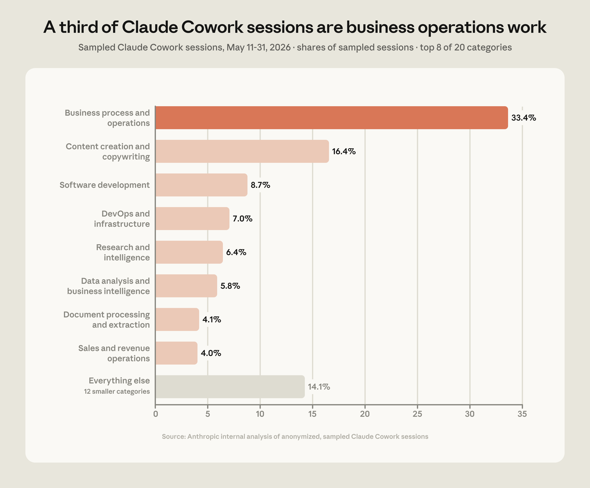

Claude Cowork 세션 표본을 살펴본 결과, 전체 사용량의 약 절반이 "일을 둘러싼 일(the work around the work)"—여러 직무에 두루 걸쳐 있지만 정작 누구의 핵심 업무는 좀처럼 아닌 작업—으로 이루어져 있었습니다.
우리가 2025년에 Claude Code를 출시했을 때, 비개발자 사용자들이 얼마나 많이 이것을 이리저리 만져 보기 시작하는지 보고 놀랐습니다. 터미널을 한 번도 열어 본 적 없던 사람들이 폴더를 정리하고, 파일 중복을 제거하고, 스프레드시트 수식을 써 주는 에이전트를 만드는 데 Claude Code를 쓰고 있었습니다.
하지만 또 다른 이들에게 터미널은 여전히 살짝 위압적인 공간—말 그대로 "블랙박스"—로 남아 있었습니다. 우리는 사람들이 이미 Claude와 대화하는 데 쓰고 있던 바로 그 채팅 인터페이스로 Claude Code의 에이전트 기능을 확장하기 위해 Claude Cowork를 만들었습니다.
1월에 Claude Cowork를 출시한 이후, 이 도구는 정보의 생성과 교환에 초점을 둔 일—많은 사람이 "지식 노동(knowledge work)"이라 부르는 일—을 하는 이들에게 특히 강력한 도구가 되었습니다. 사람들은 특정 직무의 상징이라고는 할 수 없지만 프로젝트를 앞으로 밀고 나가고 사업을 굴러가게 하는, 어떤 역할을 둘러싼 연결(connective) 작업에 해당하는 다양한 일에 Cowork를 쓰고 있습니다. 상황 보고(status update)를 작성하는 일, 슬라이드 덱을 만드는 일, 방대한 리서치 자료를 한 편의 보고서로 압축하는 일 같은 것들이죠.
이 글에서 우리는 2026년 5월 Claude Cowork 세션 표본에서 얻은 데이터를 공유하고, 그것이 사람들이 터미널 바깥의 일상 업무에서 AI를 어떻게 쓰고 있는지에 관해 무엇을 말해 주는지 살펴봅니다.
우리는 2026년 5월 11일부터 31일까지의 익명화·집계 처리된 Claude Cowork 세션 120만 건을 표본으로 추출하고, 이를 20개 업무 범주로 이루어진 분류 체계(taxonomy)에 따라 분류했습니다. 그 결과 가장 큰 사용 범주는 "비즈니스 프로세스 및 운영(business process and operations)"으로, 흩어진 업데이트를 하나의 보고서로 모으거나, 온보딩 체크리스트를 만들거나, 스프레드시트를 대사(reconcile)하는 것 같은 일이 33.4%를 차지했습니다. 이는 충분히 납득할 만한 결과입니다. 비즈니스 운영 업무는 여러 직무에 걸쳐 있기 때문입니다. 예를 들어 재무, 인사, 관리 업무를 하는 사람들은 모두 이런 유형의 작업에 Claude Cowork를 활용할 가능성이 높습니다.
다음은 콘텐츠 제작 및 카피라이팅(content creation and copywriting)으로, 초안·슬라이드 덱·게시물·제안서를 만드는 종합력이 많이 필요한 비즈니스 커뮤니케이션 작업이 16.4%를 차지했습니다. 빈 페이지를 마주하는 것은 흔히 일을 시작하는 데 있어 첫 번째 장벽인데, Claude Cowork는 생각과 정보를 엮어 초안 형태로 만드는 데 유용한 도구입니다. 이런 유형의 작업 역시 여러 직무를 넘나듭니다. 마케팅, 커뮤니케이션, 사업 개발, 프로젝트 관리 등에 종사하는 사람들이 이런 일에 Claude Cowork와 협업할 가능성이 높습니다.
그다음 상위 범주는 소프트웨어 개발(software development) 8.7%, DevOps 및 인프라(DevOps and infrastructure) 7%, 리서치 및 인텔리전스(research and intelligence) 6.4%, 데이터 분석 및 비즈니스 인텔리전스(data analysis and business intelligence) 5.8%, 문서 처리 및 추출(document processing and extraction) 4.1%, 영업 및 매출 운영(sales and revenue operations) 4% 순이었습니다.
그 밖의 모든 범주는 데이터셋에서 각각 4% 미만을 차지했으며, 여기에는 개인 비서(personal assistance) 3.8%, 교육(education) 2.4%, 회의 인텔리전스(meeting intelligence) 1.8% 등이 포함됩니다.

상위 두 사용 범주—비즈니스 프로세스 및 운영, 그리고 콘텐츠 제작 및 카피라이팅—가 전체 Claude Cowork 사용량의 약 절반을 차지한다는 점은 시사하는 바가 큽니다. 이 범주들은 압도적으로 연결적(connective) 성격을 띠고 있습니다. 스프레드시트는 흩어진 데이터 포인트들을 읽고, 비교하고, 추적할 수 있는 맥락으로 끌어모읍니다. 덱(deck)은 맥락의 이해 수준이 제각각인 더 넓은 청중에게 하나의 아이디어나 결정을 전달합니다. 온보딩 체크리스트는 신입 직원이 조직의 축적된 지식에 접속하도록 돕습니다.
우리 데이터가 시사하는 바는, 사람들이 자신의 전문성을 발휘해 행동으로 옮길 때 쓸 수 있는 정보를 모으고 구조화하는 데 Claude Cowork를 쓰고 있다는 것입니다. 예를 들어 변호사는 문서 서식 정리와 제출 처리에 Claude Cowork를 써서, 까다로운 사건에 법률적 판단을 적용할 시간을 더 확보할 수 있습니다. 채용 담당자는 회의 일정을 잡고 면접 피드백을 종합하는 데 Cowork를 써서, 지원자와의 대화와 업무 샘플 평가에 더 많은 시간을 쓸 수 있습니다. 그리고 팀 리더는 어려운 결정을 설명하는 슬라이드 덱을 만드는 데 Claude Cowork를 활용해, 정작 그 힘든 판단을 내리는 일 자체에 집중할 여유를 얻을 수 있습니다.
이 사용 패턴은 Claude Code와 흥미로운 대조를 이룹니다. Claude Code는 소프트웨어 개발자가 자기 역할의 핵심—코드를 만들고, 디버깅하고, 배포하는 일—에 가장 자주 쓰는 도구입니다. 그러니 소프트웨어 개발이 Claude Cowork 사용량에서 그토록 작은 비중을 차지하는 것도 어쩌면 놀라운 일이 아닙니다. 개발자들은 코드를 쓰는 데는 Claude Cowork보다 Claude Code를 훨씬 더 많이 쓰지만, 그들이 Claude Cowork에서 하는 일은 소프트웨어 엔지니어링을 포함한 모든 역할을 둘러싼 연결적이고 커뮤니케이션 중심의 작업입니다.
코딩은 여전히—당연하게도—AI 활용 가운데 가장 많은 주목을 받는 용도 중 하나이지만, 일상적인 비즈니스 업무에 AI를 쓰는 흐름이 늘고 있고, 사람들이 AI를 가장 유용하게 여기는 작업의 종류도 점점 뚜렷해지고 있습니다. 사람들은 팀 전반에 정보와 아이디어를 추적하고 전달하는 데 도움이 되는 작업—상황 보고서, 덱, 추적표 등—을 돕는 데 Claude Cowork를 찾고 있습니다.
이것은 하나의 스냅숏에 불과하며, Claude Cowork는 아직 새롭고 그 용도도 빠르게 진화하고 있습니다. 우리의 목표는 이 데이터를 AI 제품을 일상 업무에 어떻게 통합할지 고민하는 사람들을 위한 참고점으로 만들고, 사용이 어디에 가장 집중되어 있는지 보여 주는 것입니다. 우리는 사용이 늘고 변화함에 따라 앞으로도 계속 데이터를 발표할 계획이며, 시간이 흐르며 무엇이 달라지는지 보고하겠습니다.
Claude Cowork는 모든 Claude 사용자가 이용할 수 있습니다. 자세히 알아보거나 Claude Cowork 입문(Introduction to Claude Cowork) 강좌를 수강하며 시작해 보세요.
이번 Claude Cowork 사용자 조사를 어떻게 수행했는지에 대한 더 자세한 내용은 아래를 참고하세요.
이 분석은 자동화된 시스템이 20개 업무 범주 분류 체계로 분류한 Claude Cowork 세션 표본에 기반합니다. 데이터는 모든 사용자 정보를 익명으로 유지하는 프라이버시 보존 분석 도구로 수집되었으며, 개별 세션을 사람 분석가가 읽은 적은 없고, 우리는 오직 범주 단위로 집계된 통계만 다루었습니다.
표본은 트래픽의 고정 비율이 아니라, 상한이 정해진 비율—시간당 최대 세션 수를 고정한 값—로 수집됩니다. 그 결과 이 보고서의 모든 수치는 절대적인 양이 아니라 표본 세션 중의 비중입니다. 데이터는 2026년 5월 11일부터 31일 사이에 수집되었으며, 60만 개가 넘는 조직에서 나온 120만 건의 표본 세션을 포함합니다.